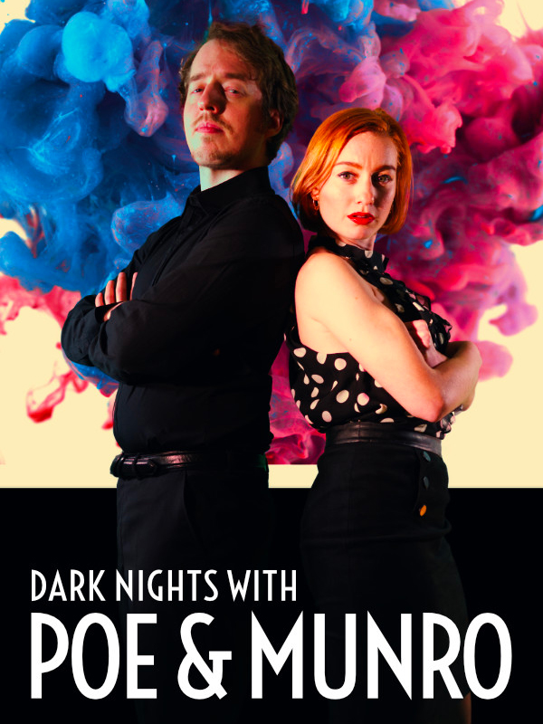

Dark Nights with Poe and Munro
Dark Nights with Poe and Munro
Details
|  | |
| Playtime | 2h 50m 0s |
| Last Activity | 2022-06-29 0:30:20 |
| Added | 2023-08-11 0:28:13 |
| Modified | 2025-10-02 10:22:47 |
| Completion Status | Completed |
| Library | Gog |
| Source | GOG |
| Platform | Macintosh PC (Linux) PC (Windows) |
| Release Date | 2020-05-19 |
| Community Score | 65 |
| Critic Score | 70 |
| User Score | |
| Genre | Adventure Arcade Indie |
| Developer | D'Avekki Studios |
| Publisher | D'Avekki Studios |
| Feature | Single Player |
| Links | Steam Official Website GOG App Store (iPhone) App Store (iPad) Twitch YouTube Playstation Nintendo |
| Tag | Adventure Choices Matter Choose Your Own Adventure Dark Comedy FMV Horror Investigation Multiple Endings Mystery Point & Click Romance Simulation Story Rich Supernatural |
Description
“You’re listening to Radio August. Dark nights, with Poe and Munro…”
Adventure in the strange town of August with local radio hosts and secret lovers Poe and Munro, as they encounter six unique mysteries on and off the air. Direct the banter and the action as they fend off a nightmare stalker who just won’t let go, a vengeful ghost looking for everlasting closure, a demonic painting that grants wishes - and more - but can you keep Poe and Munro together, and alive…?
* Six simultaneously released, fully interactive episodes
* Almost 5 hours of full screen HD video
* An intuitive point and click timed hot-spot interface
* Alternate endings for each episode and hundreds of branches
From the developers and creators of the award winning and Guinness World Record breaking “The Infectious Madness of Doctor Dekker” and “The Shapeshifting Detective”, Dark Nights with Poe and Munro is a standalone spin-off set before the events of The Shapeshifting Detective, with different gameplay and all new stories!
FEATURES
+ Click disappearing hotspots to choose what happens

+ Explore the town of August

+ Talk to the locals

+ Help Poe and Munro escape tricky situations

+ Keep them alive…

+ And together…

Starring Klemens Koehring (The Shapeshifting Detective, Sniper Elite 4) and Leah Cunard (The Shapeshifting Detective) as Poe and Munro. With a special guest appearance by Aislinn De’Ath (The Infectious Madness of Doctor Dekker, The Shapeshifting Detective).
Guest voiceovers include Justin McElroy (The Adventure Zone, My Brother, My Brother and Me), Jesse Cox (Monster Prom, The Shapeshifting Detective), Joseph Beacham (My Time at Portia) and David Homb, star of 1995’s Phantasmagoria.
CAST
POE ... Klemens Koehring
MUNRO ... Leah Cunard
VIOLET ... Aislinn De'Ath
QUENTIN ... Andre Lecointe
HENRIETTA ... April Moon
MISS CLAY ... Ashleigh Cole
MILLICENT ... Ayvianna Snow
WESMARIE ... Effy Willis
DALLAS ... Ingrid Evans
MADAME BARATSKY ... Lara Lemon
TOOMS ... Peter Revel-Walsh
ROSE ... Rachel Cowles
JONES ... Rick Romero
KASPER ... Vincent Gould
JOE ... Warrick Simon
GUEST VOICEOVERS
FRANKIE ... Justin McElroy
BECK ... Joseph Beacham
ISI ... Joe Maw
JAZ ... Jessica Kinghorn
CALLER 2 ... Barry Aldridge
ARVIN ... Jesse Cox
ERIC ... David Homb
EDDI ... Bobby Sixkilla
QUEENIE ... Alex Furness
HELENA ... Kimmy Mauldin
Q ... Eli Diaz
Adventure in the strange town of August with local radio hosts and secret lovers Poe and Munro, as they encounter six unique mysteries on and off the air. Direct the banter and the action as they fend off a nightmare stalker who just won’t let go, a vengeful ghost looking for everlasting closure, a demonic painting that grants wishes - and more - but can you keep Poe and Munro together, and alive…?
* Six simultaneously released, fully interactive episodes
* Almost 5 hours of full screen HD video
* An intuitive point and click timed hot-spot interface
* Alternate endings for each episode and hundreds of branches
From the developers and creators of the award winning and Guinness World Record breaking “The Infectious Madness of Doctor Dekker” and “The Shapeshifting Detective”, Dark Nights with Poe and Munro is a standalone spin-off set before the events of The Shapeshifting Detective, with different gameplay and all new stories!
FEATURES
+ Click disappearing hotspots to choose what happens
+ Explore the town of August
+ Talk to the locals
+ Help Poe and Munro escape tricky situations
+ Keep them alive…
+ And together…
Starring Klemens Koehring (The Shapeshifting Detective, Sniper Elite 4) and Leah Cunard (The Shapeshifting Detective) as Poe and Munro. With a special guest appearance by Aislinn De’Ath (The Infectious Madness of Doctor Dekker, The Shapeshifting Detective).
Guest voiceovers include Justin McElroy (The Adventure Zone, My Brother, My Brother and Me), Jesse Cox (Monster Prom, The Shapeshifting Detective), Joseph Beacham (My Time at Portia) and David Homb, star of 1995’s Phantasmagoria.
CAST
POE ... Klemens Koehring
MUNRO ... Leah Cunard
VIOLET ... Aislinn De'Ath
QUENTIN ... Andre Lecointe
HENRIETTA ... April Moon
MISS CLAY ... Ashleigh Cole
MILLICENT ... Ayvianna Snow
WESMARIE ... Effy Willis
DALLAS ... Ingrid Evans
MADAME BARATSKY ... Lara Lemon
TOOMS ... Peter Revel-Walsh
ROSE ... Rachel Cowles
JONES ... Rick Romero
KASPER ... Vincent Gould
JOE ... Warrick Simon
GUEST VOICEOVERS
FRANKIE ... Justin McElroy
BECK ... Joseph Beacham
ISI ... Joe Maw
JAZ ... Jessica Kinghorn
CALLER 2 ... Barry Aldridge
ARVIN ... Jesse Cox
ERIC ... David Homb
EDDI ... Bobby Sixkilla
QUEENIE ... Alex Furness
HELENA ... Kimmy Mauldin
Q ... Eli Diaz